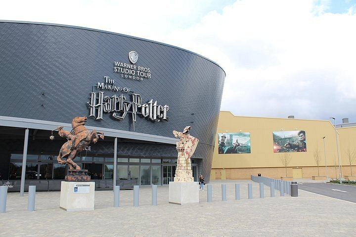
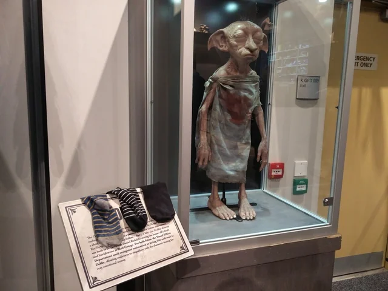
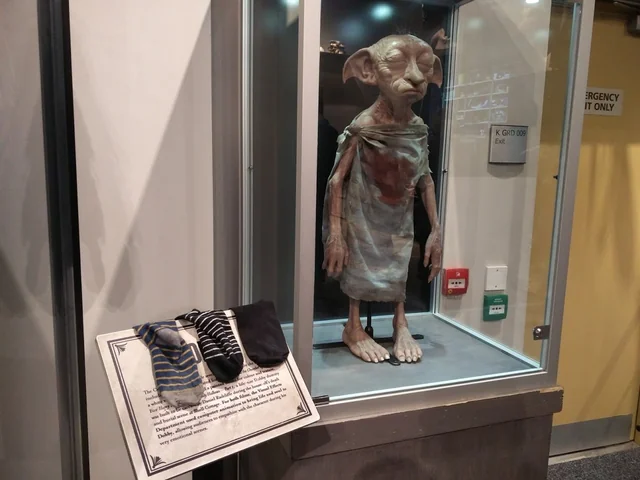
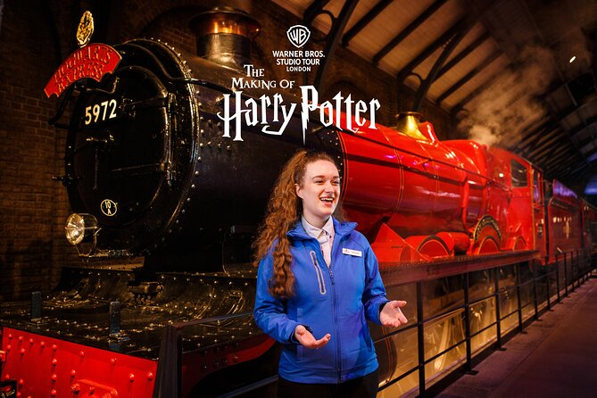

Producción y Estudio de Grabación de Harry Potter
La saga cinematográfica de Harry Potter no solo encantó por su historia, sino también por el increíble trabajo de producción detrás de escena. A lo largo de una década, se construyó un mundo mágico que marcó un antes y un después en el cine fantástico.
Estudios Leavesden
Las películas fueron filmadas principalmente en los estudios Leavesden, ubicados en Hertfordshire, Inglaterra. Este lugar se convirtió en el corazón de la producción y fue adaptado especialmente para la creación de todos los escenarios de Hogwarts y más allá.
Sets icónicos
Muchos de los sets fueron construidos de forma permanente para facilitar la grabación durante años. Escenarios como el Gran Comedor, el despacho de Dumbledore, la sala común de Gryffindor o el Callejón Diagon se convirtieron en espacios clásicos y reconocibles para los fans.

Efectos especiales y tecnología
El equipo de producción utilizó una mezcla de efectos prácticos, animatrónicos y CGI. Las criaturas mágicas, los hechizos, los partidos de Quidditch y las batallas fueron creados combinando técnicas tradicionales con software avanzado. Por ejemplo, para los vuelos en escoba se utilizaron pantallas verdes y grúas robotizadas.
 

Curiosidades del rodaje
- El modelo de Hogwarts usado para las tomas exteriores fue una maqueta a escala, increíblemente detallada.
- Se grababan escenas de distintas películas al mismo tiempo, para aprovechar la disponibilidad de los actores.
- Más de 500 magos diferentes fueron creados con maquillaje, vestuario y efectos digitales.
- Se utilizaron más de 250.000 artículos de utilería a lo largo de toda la saga.

Un legado en el cine
La dedicación de los equipos técnicos, creativos y artísticos convirtió la saga en un hito de la historia del cine. Hoy en día, los estudios Leavesden siguen siendo un punto de visita obligada para los fanáticos del mundo mágico.
